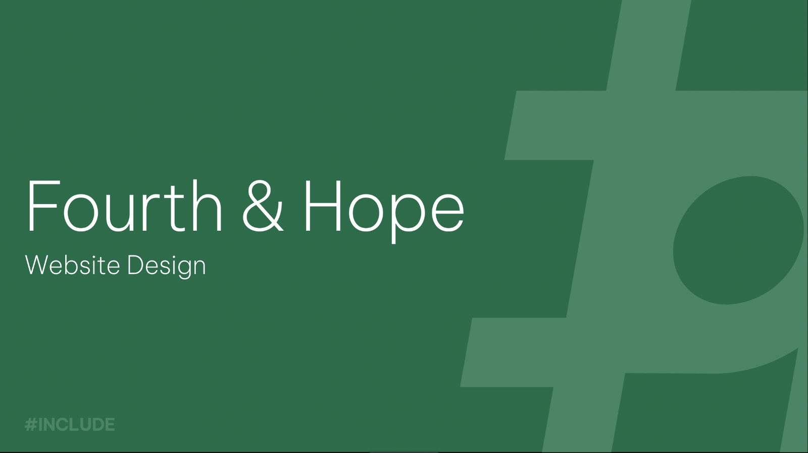

Homepage hero — 2 options
1aPhoto + floating proofBold, personal, every card is real work
Maya Yoo
VenturesMarketingStorytellingDesignCase studies ▾AboutRésumé ↓
BRAND STRATEGY · GROWTH MARKETING · DESIGN
I build brands
people follow.

daviswithmaya
▶ 2.8M views
Fourth & Hope — HomeFigma

1440 × 1024
INSTAGRAMnow
New brand partnership
CapCut × @daviswithmaya
Skills
Brand strategy★
Growth marketing★
Short-form video★
UX/UI design★
Photography★
AAstoryandspoon.co↻
Figma
Ps
Pr
Ai
Lr
Canva
CapCut
Meta
Claude
1bEditorial splitCalmer, faster to read, proof attached to the photo
Maya Yoo
VenturesMarketingStorytellingDesignCase studies ▾AboutRésumé ↓
BRAND STRATEGY · GROWTH MARKETING · PRODUCT & VISUAL DESIGN
Open to summer 2027 internships
I build brands
people follow.
I’m Maya. I’ve built three brands from zero to 6.6M+ monthly views, handling the strategy, content, and design myself.
Download résumé ↓
See case studies →
6.6M+
monthly views
30+
brand partners
3
brands founded
INSTAGRAM · now
New partnership: CapCut
▶ 2.8M views
@daviswithmaya
SKILLS
Brand strategy
Growth marketing
Short-form video
UX/UI design
Photography
TOOLS
Figma · Adobe CC · CapCut · Canva · Meta Business · Claude